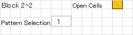
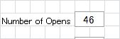
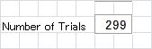
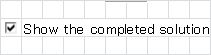
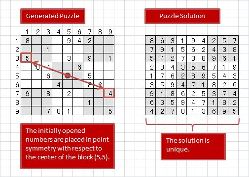
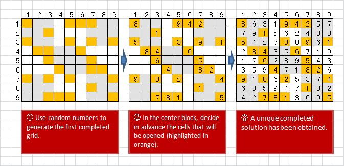
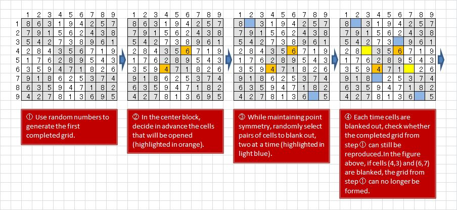
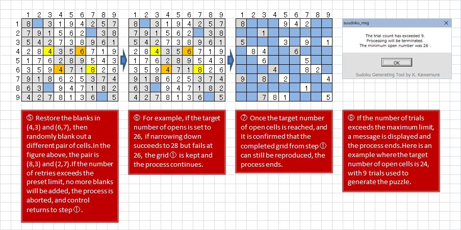
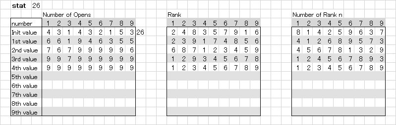

Sudoku Puzzle Generator
I created a tool for generating Sudoku puzzles using an Excel macro. (You can download it at the bottom of this page.)
Fig. 1
Preparation for puzzle generation
-
In "Pattern Selection," you explicitly specify which cells in the center block will be opened.

Please enter the numbers directly. Since no upper/lower limit check is implemented, enter values between 1 and 12. If left blank, puzzle generation will start with 1.
If the number of open cells is even, please specify an even number for the next "Number of Opens."
If it is odd, please specify an odd number. -
In "Number of Opens," specify how many cells will initially be opened.

Please enter the numbers directly. Since no upper/lower limit check is implemented, enter a value you consider reasonable. As this is a Sudoku puzzle, around 30 is appropriate. If left blank, puzzle generation will start with 26. The minimum number of "opens" this tool has successfully generated is as follows:
If "Pattern Selection" is odd: 23
If "Pattern Selection" is even: 24 -
In "Number of Trials," specify how many attempts will be made.

Please enter the numbers directly. Since no upper/lower limit check is implemented, enter a value you consider reasonable. Depending on the "Number of Opens," values such as 99, 199, or 299 are appropriate. If left blank, puzzle generation will start with 299.
-
If you check "Show the completed solution," the full solution will be displayed once the puzzle has been generated.

- Once you have entered values into the text boxes above, preparation is complete. Press the "START" button to begin generating the puzzle.
From here the content becomes a bit more detailed. If you simply want to try it out, please proceed to "Download."
Puzzle generation algorithm
-
Puzzle Creation Rules
This follows the rules used by Nikoli, whose Sudoku puzzles are published in the Asahi Shimbun morning edition (Tue–Fri). The rules are:
- When the puzzle is solved, the solution must be unique.
- The initially opened cells must be rotationally symmetric.
Fig. 2
-
Steps of puzzle creation (Nikoli's method)
Nikoli's website provides a video showing how to create puzzles. According to the explanation, you first decide which cells to open, then choose numbers to place so that a complete solution can be formed.
Fig. 3
The key step in the above figure is ②. You place numbers into the orange cells, and as you proceed you fill in numbers in other cells that can be logically determined. The video spends more than 30 minutes explaining this. The explanation is clear, and after watching it I thought, "I might be able to make puzzles this way." I actually tried, but always failed near the end, when no more numbers could be placed. Nikoli refers to this situation as being "stuck."
-
Steps of puzzle creation (this tool's method)
I created a tool that generates puzzles using the opposite approach to Nikoli's method.
I also considered making an interactive tool that follows Nikoli's method, but I abandoned the idea because I anticipated the logic would become quite complex.
In this tool, the process starts by creating a completely filled grid. A completed Sudoku grid is defined as follows:
Each row (9), each column (9), and each 3×3 block (9) must contain the numbers 1 through 9 exactly once.
- Based on this definition, I designed an algorithm to fill the entire grid using random numbers (The figure above step ①). For the recursive logic in generating the solution, I referred to Sudoku Example Generation . Many thanks for this reference.
-
The following explanation is based on Fig. 4. Numbers such as ① and ② refer to "step 1" and "step 2."
Except for the center block specified in "Pattern Selection," the tool randomly chooses pairs of symmetric cells to blank out. See step ③.
Each time new blanks are added, the tool checks whether the original solution ① can still be reproduced. If the puzzle becomes unsolvable at some point, the last blanks are undone, and other cells are blanked instead (feedback).
For example, if the target number of opens is set to 26:
If blanking fails when narrowing down to 30, the filled grid ① is discarded and a new one is generated, then the process continues from ②. See step ⑤.
If narrowing down succeeds to 28 but fails at 26, the grid ① is kept and the process continues. See step ⑥.
The creation of the solution (a fully filled 9×9 set of cells) is based on random numbers. While checking the narrowing process for making blanks, I began to feel that some solutions are easier to narrow down than others. When the target is 26 and narrowing reaches 28, I thought that by continuing to use that solution, it should eventually yield 26. Since applying this logic, I have been able to generate puzzles with 23 and 24 open cells, so I don't think this reasoning is entirely wrong.
The count for “Number of Repeats” begins during trials after the final form is fixed. If a puzzle cannot be created even after exceeding the number of repeats, a message box will appear, displaying the minimum number that could be created. See step ⑧.

Fig. 4
NOTE
-
About "stat"
"number of opens," "rank," and "number of rank n" display data required to solve the generated puzzles. You don't really need to pay attention to them, but the more lines appear, the longer it takes to solve. In a sense, this can be considered an indicator of difficulty.
When generating puzzles, it's tempting to set the target number of opens as small as possible. But the fewer opens, the harder it becomes to solve. I recommend considering the "stat" line count and aiming for a manageable puzzle.
 -
About the number of trials
If the target number of opens is 25 or more, puzzles are usually generated fairly easily. With 24, setting the trial count to 299 should usually succeed before the limit is reached (though it's probability-based, so it may still fail).
The probrem is when the target is 23. With a limit of 299, puzzle generation often fails. Even with 999 trials, it doesn't always succeed. Trying multiple times with 299 is usually faster. If it still fails, trying again after a few days may suddenly succeed. This is because random numbers (pseudo-random, actually) are used in grid generation. It is merely my own imagination, but there may be times when random numbers that can reduce the open number continue, or times when the opposite happens.
-
In case you create an interesting puzzle during the generating process
Since random numbers are used, you cannot directly control which cells are opened. However, when the target number of opens is 24, each time a puzzle with 26 opens is generated, the positions of the opened cells displayed in “make” change. If you come across an interesting puzzle, press [Ctrl]+[Break], copy rows 6 through 32, and paste them into another sheet. This way you can build your own collection of Sudoku puzzles.
DOWNLOAD
Notes on using this tool
- Unauthorized redistribution of this tool is strictly prohibited.
-
If you are considering improving or modifying the logic,
please contact me and I will send you the source code.
If you succeed in achieving 22 or 21 opens through modifications, I'd be very happy to hear from you—hopefully you can also share the modified logic.
Click "z.suudoku_03_en.zip" to download.
The current latest version is “z.suudoku_03_en.zip”. You can also download “z.suudoku_02_en.zip”, but I recommend downloading “z.suudoku_03_en.zip”. The latest version functions identically to the operations described on this page, except that it includes a built-in feature to save created data.
The previous version
The latest version